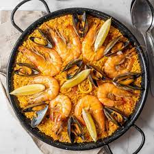

Paella

Description
A traditional paella Valenciana. I lived in Spain for two years where I was taught the art of making paella which originated in Valencia. I haven't found anything on here which is even close to authentic, so I thought I would add this recipe for those who would like to try a taste of Spain. First and foremost you will need a special paella pan called a paellera or just a paella. Trust me after you taste this you'll be glad you bought the special pan.
Ingredients
- 1 tablespoon olive oil
- ½ (4 pound) whole chicken, cut into 6 pieces
- ½ (4 pound) whole chicken, cut into 6 pieces
- 1 head garlic, cloves separated and peeled
- 1 medium tomato, finely chopped
- 1 (15.5 ounce) can butter beans
- ½ (10 ounce) package frozen green peas
- ½ (10 ounce) package frozen green beans
- 1 teaspoon mild paprika, or to taste
- 6 cups water, or as needed
- salt to taste
- 1 pinch saffron threads, or to taste
- 1 pinch dried thyme, or to taste
- 1 pinch dried rosemary, or to taste
- 3 cups short-grain white rice, or as needed
Steps
- Heat a paella pan over medium-high heat, and coat with olive oil. Add chicken, rabbit, and garlic; cook and stir until nicely browned. Move the browned meat to the sides of the pan, and add tomato, butter beans, peas, and green beans. Season with paprika, and mix well.
- Fill the paella pan almost to the top with water, measuring the water as you add it so you can determine the amount of rice to add later. Bring to a boil. Simmer for about 1 hour to make a nice broth.
- Season with a generous amount of salt, just enough saffron for a yellow color, thyme, and rosemary. Stir in half as much rice as the amount of water added to the pan. Cover, reduce heat to low, and simmer until all of the liquid has been absorbed, about 20 minutes.